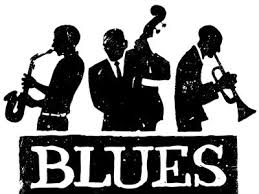
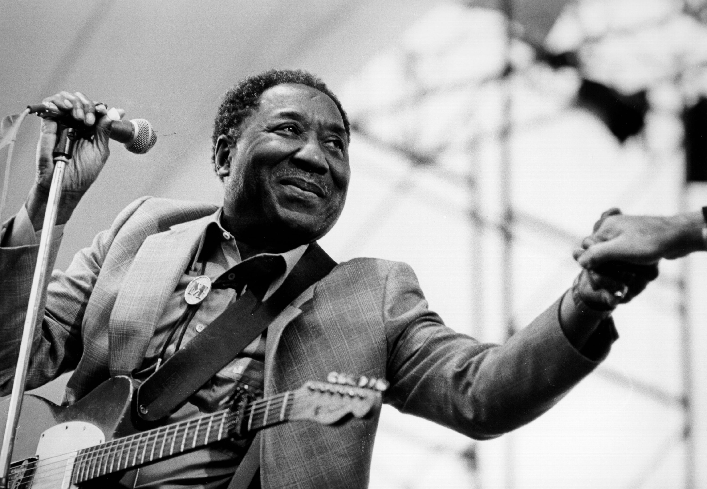

Blues is an emotion-driven music genre that’s dominated by flattened notes. It’s considered a form of folk music that emphasizes call and response patterns, dissonant harmonies, and syncopation. Blues music has a microtonal nature and usually includes chants, shouts, spirituals, and field hollers. Some notable blues songs include Texas Flood by Stevie Ray Vaughan, I’m Torn Down by Freddy King, and Hound Dog by Big Mama Thornton. |
 |